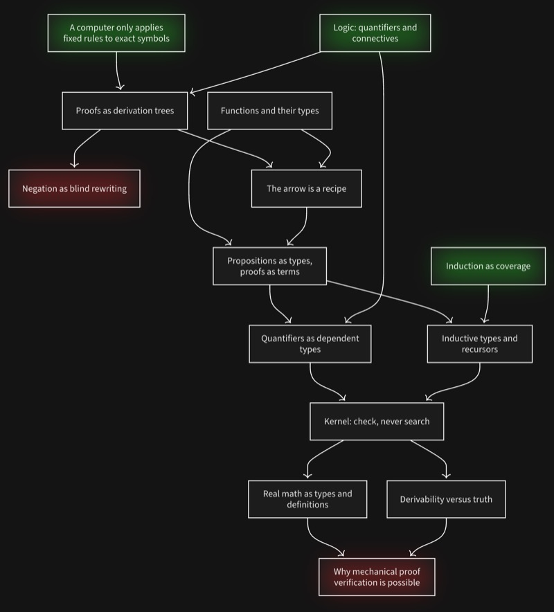
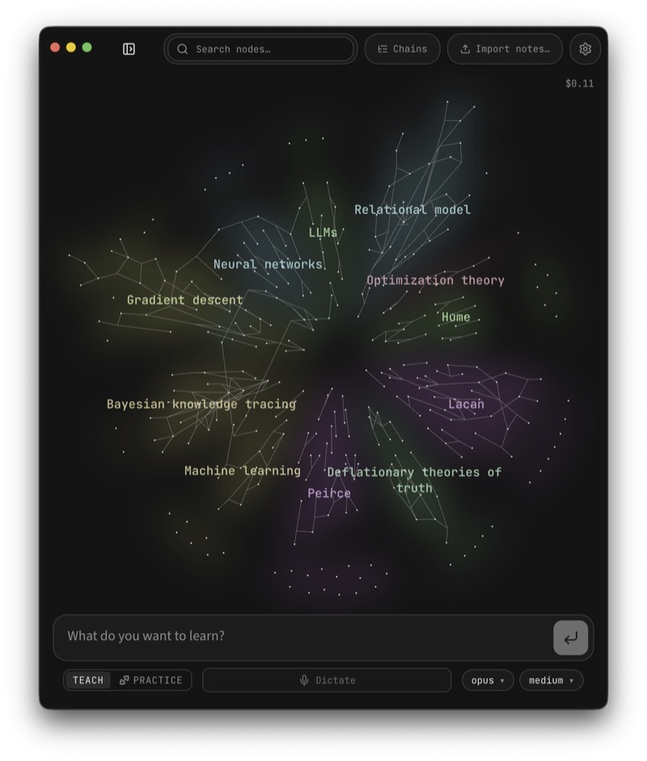
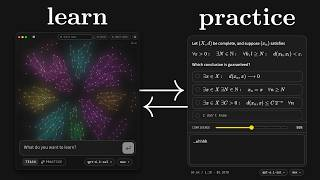

Media Gallery
Inside the LearnHarness desktop interface: live teaching sessions, minimal dependency lesson maps, the persistent proposition graph, and the video walkthrough.
Showing 4 media items.





Inside the LearnHarness desktop interface: live teaching sessions, minimal dependency lesson maps, the persistent proposition graph, and the video walkthrough.
Showing 4 media items.


